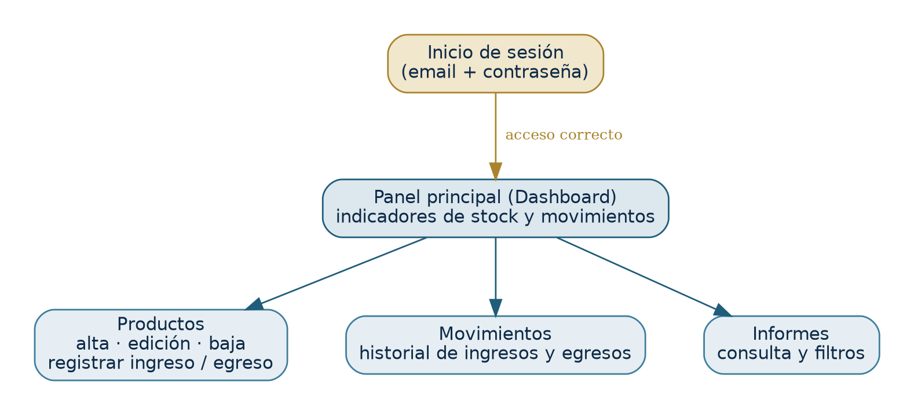

<!DOCTYPE html>
<html>
<head>
	<meta http-equiv="content-type" content="text/html; charset=utf-8"/>
	<title>SIREN - Manual de Usuario</title>
	<meta name="generator" content="LibreOffice 24.2.7.2 (Linux)"/>
	<meta name="author" content="BPF SYSTEM"/>
	<meta name="created" content="2026-06-14T21:48:46.233000000"/>
	<meta name="changedby" content="Un-named"/>
	<meta name="changed" content="2026-06-14T21:48:46.233000000"/>
	<style type="text/css">
		@page { size: 8.5in 11in; margin: 1in }
		p { line-height: 115%; text-align: left; orphans: 2; widows: 2; margin-bottom: 0.1in; direction: ltr; background: transparent }
		h1 { color: #0e2a47; text-align: left; orphans: 2; widows: 2; margin-top: 0.22in; margin-bottom: 0.1in; border-top: none; border-bottom: 1.00pt solid #1f5d7a; border-left: none; border-right: none; padding-top: 0in; padding-bottom: 0.08in; padding-left: 0in; padding-right: 0in; direction: ltr; background: transparent; page-break-after: avoid }
		h1.western { font-family: "Arial", sans-serif; font-size: 15pt; font-weight: bold }
		h1.cjk { font-family: "Arial"; font-size: 15pt; font-weight: bold }
		h1.ctl { font-family: "Arial"; font-size: 15pt; font-weight: bold }
		h2 { color: #1f5d7a; text-align: left; orphans: 2; widows: 2; margin-top: 0.15in; margin-bottom: 0.06in; direction: ltr; background: transparent; page-break-after: avoid }
		h2.western { font-family: "Arial", sans-serif; font-size: 12pt; font-weight: bold }
		h2.cjk { font-family: "Arial"; font-size: 12pt; font-weight: bold }
		h2.ctl { font-family: "Arial"; font-size: 12pt; font-weight: bold }
		a:link { color: #0563c1; text-decoration: underline }
	</style>

<meta name="viewport" content="width=device-width,initial-scale=1">
<style>
body{max-width:880px!important;margin:0 auto!important;padding:42px 26px 90px!important;background:#FBF8F1!important;color:#22282E!important;font-family:Georgia,'Times New Roman',serif!important;line-height:1.68!important}
img{max-width:100%!important;height:auto!important;display:block;margin:1.1em auto!important}
table{max-width:100%!important;border-collapse:collapse!important}
*{max-width:100%}
@media(max-width:600px){body{padding:22px 14px!important}}
</style>
</head>
<body lang="en-US" link="#0563c1" vlink="#800000" dir="ltr"><p style="line-height: 100%; margin-top: 0.59in; margin-bottom: 0in">
<br/>

</p>
<p align="center" style="line-height: 100%; margin-top: 0.08in; margin-bottom: 0.04in">

</p>
<p align="center" style="line-height: 100%; margin-top: 0.35in; margin-bottom: 0in">
<font color="#0e2a47"><font size="6" style="font-size: 30pt"><b>MANUAL
DE USUARIO</b></font></font></p>
<p align="center" style="line-height: 100%; margin-top: 0.06in; margin-bottom: 0in">
<font color="#a9842c"><font size="5" style="font-size: 20pt"><b>SIREN</b></font></font></p>
<p align="center" style="line-height: 100%; margin-bottom: 0.03in"><font color="#33444f"><font size="3" style="font-size: 12pt">Sistema
de Gestión de Stock y Ventas</font></font></p>
<p align="center" style="line-height: 100%; margin-bottom: 0.42in"><font color="#3a4a55"><font size="2" style="font-size: 11pt"><i>Guía
de uso para el operador del sistema</i></font></font></p>
<table width="624" cellpadding="4" cellspacing="0">
	<col width="191"/>
	<col width="415"/>
	<thead>
		<tr>
			<td width="191" bgcolor="#0e2a47" style="background: #0e2a47; border: 1px solid #c9bfa9; padding: 0.04in 0.08in"><p>
				<font color="#ffffff"><font size="2" style="font-size: 10pt"><b>Dato</b></font></font></p>
			</td>
			<td width="415" bgcolor="#0e2a47" style="background: #0e2a47; border: 1px solid #c9bfa9; padding: 0.04in 0.08in"><p>
				<font color="#ffffff"><font size="2" style="font-size: 10pt"><b>Detalle</b></font></font></p>
			</td>
		</tr>
	</thead>
	<tbody>
		<tr>
			<td width="191" bgcolor="#f5efe3" style="background: #f5efe3; border: 1px solid #c9bfa9; padding: 0.04in 0.08in"><p>
				<font size="2" style="font-size: 10pt">Sistema</font></p>
			</td>
			<td width="415" bgcolor="#f5efe3" style="background: #f5efe3; border: 1px solid #c9bfa9; padding: 0.04in 0.08in"><p>
				<font size="2" style="font-size: 10pt">SIREN — Sales &amp;
				Inventory for Nautics</font></p>
			</td>
		</tr>
		<tr>
			<td width="191" bgcolor="#ffffff" style="background: #ffffff; border: 1px solid #c9bfa9; padding: 0.04in 0.08in"><p>
				<font size="2" style="font-size: 10pt">Dirigido a</font></p>
			</td>
			<td width="415" bgcolor="#ffffff" style="background: #ffffff; border: 1px solid #c9bfa9; padding: 0.04in 0.08in"><p>
				<font size="2" style="font-size: 10pt">Personal de Claudio Pérez
				Servicio Náutico</font></p>
			</td>
		</tr>
		<tr>
			<td width="191" bgcolor="#f5efe3" style="background: #f5efe3; border: 1px solid #c9bfa9; padding: 0.04in 0.08in"><p>
				<font size="2" style="font-size: 10pt">Desarrollado por</font></p>
			</td>
			<td width="415" bgcolor="#f5efe3" style="background: #f5efe3; border: 1px solid #c9bfa9; padding: 0.04in 0.08in"><p>
				<font size="2" style="font-size: 10pt">BPF SYSTEM</font></p>
			</td>
		</tr>
		<tr>
			<td width="191" bgcolor="#ffffff" style="background: #ffffff; border: 1px solid #c9bfa9; padding: 0.04in 0.08in"><p>
				<font size="2" style="font-size: 10pt">Fecha</font></p>
			</td>
			<td width="415" bgcolor="#ffffff" style="background: #ffffff; border: 1px solid #c9bfa9; padding: 0.04in 0.08in"><p>
				<font size="2" style="font-size: 10pt">Junio de 2026</font></p>
			</td>
		</tr>
		<tr>
			<td width="191" bgcolor="#f5efe3" style="background: #f5efe3; border: 1px solid #c9bfa9; padding: 0.04in 0.08in"><p>
				<font size="2" style="font-size: 10pt">Versión del documento</font></p>
			</td>
			<td width="415" bgcolor="#f5efe3" style="background: #f5efe3; border: 1px solid #c9bfa9; padding: 0.04in 0.08in"><p>
				<font size="2" style="font-size: 10pt">1.0</font></p>
			</td>
		</tr>
	</tbody>
</table>
<p style="line-height: 100%; margin-bottom: 0in"><br/>

</p>
<h1 class="western" style="page-break-before: always">Índice</h1>
<div id="Table of Contents1" dir="ltr"><p style="line-height: 100%; margin-bottom: 0in">
	</p>
</div>
<p style="line-height: 100%; margin-bottom: 0in"><br/>

</p>
<p style="line-height: 100%; margin-bottom: 0in"><br/>

</p>
<h1 class="western" style="margin-top: 0in; page-break-before: always">
1. Introducción</h1>
<p style="line-height: 0.19in; margin-bottom: 0.08in"><b>SIREN</b> es
el sistema que utiliza Claudio Pérez Servicio Náutico para
controlar el stock y los movimientos de mercadería del local. Con
SIREN podés cargar tus productos, registrar las entradas y salidas
de stock, ver el historial de movimientos y consultar de un vistazo
el estado de tu inventario.</p>
<p style="line-height: 0.19in; margin-bottom: 0.08in">Este manual
está pensado para el personal que opera el sistema en el día a día.
No hace falta tener conocimientos técnicos: cada tarea está
explicada paso a paso.</p>
<p style="line-height: 0.18in; margin-top: 0.03in; margin-bottom: 0in; border-top: 1px solid #e6decf; border-bottom: none; border-left: 3.00pt solid #a9842c; border-right: none; padding-top: 0.06in; padding-bottom: 0in; padding-left: 0.14in; padding-right: 0in; background: #eaf5f6">
<font color="#a9842c"><font size="2" style="font-size: 10pt"><b>¿Qué
vas a poder hacer con SIREN?</b></font></font></p>
<p style="line-height: 0.18in; margin-bottom: 0in; border-top: none; border-bottom: none; border-left: 3.00pt solid #a9842c; border-right: none; padding-top: 0in; padding-bottom: 0in; padding-left: 0.14in; padding-right: 0in; background: #eaf5f6">
<font color="#3a3a3a"><font size="2" style="font-size: 10pt">Iniciar
sesión de forma segura con tu usuario y contraseña.</font></font></p>
<p style="line-height: 0.18in; margin-bottom: 0in; border-top: none; border-bottom: none; border-left: 3.00pt solid #a9842c; border-right: none; padding-top: 0in; padding-bottom: 0in; padding-left: 0.14in; padding-right: 0in; background: #eaf5f6">
<font color="#3a3a3a"><font size="2" style="font-size: 10pt">Cargar,
modificar y dar de baja productos.</font></font></p>
<p style="line-height: 0.18in; margin-bottom: 0in; border-top: none; border-bottom: none; border-left: 3.00pt solid #a9842c; border-right: none; padding-top: 0in; padding-bottom: 0in; padding-left: 0.14in; padding-right: 0in; background: #eaf5f6">
<font color="#3a3a3a"><font size="2" style="font-size: 10pt">Registrar
ingresos (entradas) y egresos (salidas) de mercadería.</font></font></p>
<p style="line-height: 0.18in; margin-bottom: 0in; border-top: none; border-bottom: 1px solid #e6decf; border-left: 3.00pt solid #a9842c; border-right: none; padding-top: 0in; padding-bottom: 0.06in; padding-left: 0.14in; padding-right: 0in; background: #eaf5f6">
<font color="#3a3a3a"><font size="2" style="font-size: 10pt">Consultar
el historial de movimientos y los indicadores del panel.</font></font></p>
<p style="line-height: 100%; margin-bottom: 0.08in"><br/>
<br/>

</p>
<h1 class="western">2. Requisitos para usar el sistema</h1>
<ul>
	<li value="1"><p style="line-height: 0.19in; margin-bottom: 0.05in">Una
	computadora con conexión al sistema (el equipo donde está
	instalado SIREN o uno conectado a la misma red del local).</p></li>
	<li><p style="line-height: 0.19in; margin-bottom: 0.05in">Un
	navegador web actualizado (Google Chrome, Microsoft Edge o Firefox).</p></li>
	<li><p style="line-height: 0.19in; margin-bottom: 0.05in">Tu usuario
	y contraseña, provistos por el administrador.</p></li>
</ul>
<p style="line-height: 0.19in; margin-bottom: 0.08in">Para ingresar,
abrí el navegador y escribí la dirección del sistema:
<font color="#1b4965"><font face="Consolas, serif"><font size="2" style="font-size: 9pt">http://localhost:5173</font></font></font>
 (o la dirección que te haya indicado el administrador).</p>
<h1 class="western">3. Acceso al sistema</h1>
<p style="line-height: 0.19in; margin-bottom: 0.08in">Al abrir SIREN
verás la pantalla de inicio de sesión. Para entrar:</p>
<ol>
	<li value="1"><p style="line-height: 0.19in; margin-bottom: 0.06in">Escribí
	tu email en el campo correspondiente.</p></li>
	<li><p style="line-height: 0.19in; margin-bottom: 0.06in">Escribí
	tu contraseña.</p></li>
	<li><p style="line-height: 0.19in; margin-bottom: 0.06in">Presioná
	el botón <b>Iniciar sesión</b>.</p></li>
</ol>
<p align="center" style="line-height: 100%; margin-top: 0.07in; margin-bottom: 0.11in; border: 1px dashed #1f5d7a; padding: 0.19in; background: #f7fafd">
🖼  <font color="#1f5d7a"><font size="2" style="font-size: 10pt"><i>[
Captura de pantalla: Pantalla de inicio de sesión ]</i></font></font></p>
<p style="line-height: 0.19in; margin-bottom: 0.08in">Si los datos
son correctos, ingresarás al panel principal. Si no, el sistema te
avisará para que vuelvas a intentarlo.</p>
<p style="line-height: 0.18in; margin-top: 0.03in; margin-bottom: 0in; border-top: 1px solid #e6decf; border-bottom: none; border-left: 3.00pt solid #a4322b; border-right: none; padding-top: 0.06in; padding-bottom: 0in; padding-left: 0.14in; padding-right: 0in; background: #fbf1e6">
<font color="#a4322b"><font size="2" style="font-size: 10pt"><b>Consejo</b></font></font></p>
<p style="line-height: 0.18in; margin-bottom: 0in; border-top: none; border-bottom: 1px solid #e6decf; border-left: 3.00pt solid #a4322b; border-right: none; padding-top: 0in; padding-bottom: 0.06in; padding-left: 0.14in; padding-right: 0in; background: #fbf1e6">
<font color="#3a3a3a"><font size="2" style="font-size: 10pt">Verificá
que no esté activada la tecla Mayúsculas y que el email esté bien
escrito. La contraseña distingue mayúsculas de minúsculas.</font></font></p>
<p style="line-height: 100%; margin-bottom: 0.08in"><br/>
<br/>

</p>
<h1 class="western">4. Conociendo la interfaz</h1>
<p style="line-height: 0.19in; margin-bottom: 0.08in">Una vez dentro,
el sistema se organiza en secciones a las que accedés desde el menú
lateral. El siguiente esquema muestra cómo se navega entre ellas:</p>
<p align="center" style="line-height: 100%; margin-top: 0.08in; margin-bottom: 0.04in">

</p>
<p align="center" style="line-height: 100%; margin-bottom: 0.11in"><font color="#3a4a55"><font size="2" style="font-size: 9pt"><i>Figura
1. Navegación entre las secciones de SIREN.</i></font></font></p>
<p style="line-height: 0.19in; margin-bottom: 0.08in">Las secciones
principales son:</p>
<ul>
	<li><p style="line-height: 0.19in; margin-bottom: 0.05in"><b>Panel
	principal (Dashboard): </b>resumen del estado del inventario.</p></li>
	<li><p style="line-height: 0.19in; margin-bottom: 0.05in"><b>Productos:
	</b>alta, edición y baja de productos, y registro de
	ingresos/egresos.</p></li>
	<li><p style="line-height: 0.19in; margin-bottom: 0.05in"><b>Movimientos:
	</b>historial de todas las entradas y salidas.</p></li>
	<li><p style="line-height: 0.19in; margin-bottom: 0.05in"><b>Informes:
	</b>consultas del movimiento de stock.</p></li>
</ul>
<p align="center" style="line-height: 100%; margin-top: 0.07in; margin-bottom: 0.11in; border: 1px dashed #1f5d7a; padding: 0.19in; background: #f7fafd">
🖼  <font color="#1f5d7a"><font size="2" style="font-size: 10pt"><i>[
Captura de pantalla: Vista general con el menú lateral ]</i></font></font></p>
<h1 class="western">5. Panel principal (Dashboard)</h1>
<p style="line-height: 0.19in; margin-bottom: 0.08in">El panel
principal te muestra de un vistazo el estado de tu inventario
mediante tarjetas con indicadores:</p>
<table width="624" cellpadding="4" cellspacing="0">
	<col width="184"/>
	<col width="422"/>
	<thead>
		<tr>
			<td width="184" bgcolor="#0e2a47" style="background: #0e2a47; border: 1px solid #c9bfa9; padding: 0.04in 0.08in"><p>
				<font color="#ffffff"><font size="2" style="font-size: 10pt"><b>Indicador</b></font></font></p>
			</td>
			<td width="422" bgcolor="#0e2a47" style="background: #0e2a47; border: 1px solid #c9bfa9; padding: 0.04in 0.08in"><p>
				<font color="#ffffff"><font size="2" style="font-size: 10pt"><b>Qué
				significa</b></font></font></p>
			</td>
		</tr>
	</thead>
	<tbody>
		<tr>
			<td width="184" bgcolor="#f5efe3" style="background: #f5efe3; border: 1px solid #c9bfa9; padding: 0.04in 0.08in"><p>
				<font size="2" style="font-size: 10pt">Total de productos</font></p>
			</td>
			<td width="422" bgcolor="#f5efe3" style="background: #f5efe3; border: 1px solid #c9bfa9; padding: 0.04in 0.08in"><p>
				<font size="2" style="font-size: 10pt">Cantidad de productos
				cargados en el sistema.</font></p>
			</td>
		</tr>
		<tr>
			<td width="184" bgcolor="#ffffff" style="background: #ffffff; border: 1px solid #c9bfa9; padding: 0.04in 0.08in"><p>
				<font size="2" style="font-size: 10pt">Stock total</font></p>
			</td>
			<td width="422" bgcolor="#ffffff" style="background: #ffffff; border: 1px solid #c9bfa9; padding: 0.04in 0.08in"><p>
				<font size="2" style="font-size: 10pt">Suma de las unidades
				disponibles de todos los productos.</font></p>
			</td>
		</tr>
		<tr>
			<td width="184" bgcolor="#f5efe3" style="background: #f5efe3; border: 1px solid #c9bfa9; padding: 0.04in 0.08in"><p>
				<font size="2" style="font-size: 10pt">Ingresos de hoy</font></p>
			</td>
			<td width="422" bgcolor="#f5efe3" style="background: #f5efe3; border: 1px solid #c9bfa9; padding: 0.04in 0.08in"><p>
				<font size="2" style="font-size: 10pt">Cantidad de entradas de
				mercadería registradas en el día.</font></p>
			</td>
		</tr>
		<tr>
			<td width="184" bgcolor="#ffffff" style="background: #ffffff; border: 1px solid #c9bfa9; padding: 0.04in 0.08in"><p>
				<font size="2" style="font-size: 10pt">Egresos de hoy</font></p>
			</td>
			<td width="422" bgcolor="#ffffff" style="background: #ffffff; border: 1px solid #c9bfa9; padding: 0.04in 0.08in"><p>
				<font size="2" style="font-size: 10pt">Cantidad de salidas de
				mercadería registradas en el día.</font></p>
			</td>
		</tr>
		<tr>
			<td width="184" bgcolor="#f5efe3" style="background: #f5efe3; border: 1px solid #c9bfa9; padding: 0.04in 0.08in"><p>
				<font size="2" style="font-size: 10pt">Stock bajo</font></p>
			</td>
			<td width="422" bgcolor="#f5efe3" style="background: #f5efe3; border: 1px solid #c9bfa9; padding: 0.04in 0.08in"><p>
				<font size="2" style="font-size: 10pt">Productos cuyas
				existencias están en un nivel bajo y conviene reponer.</font></p>
			</td>
		</tr>
	</tbody>
</table>
<p align="center" style="line-height: 100%; margin-top: 0.07in; margin-bottom: 0.11in; border: 1px dashed #1f5d7a; padding: 0.19in; background: #f7fafd">
🖼  <font color="#1f5d7a"><font size="2" style="font-size: 10pt"><i>[
Captura de pantalla: Panel principal con las tarjetas de indicadores
]</i></font></font></p>
<h1 class="western">6. Gestión de productos</h1>
<p style="line-height: 0.19in; margin-bottom: 0.08in">En la sección
<b>Productos</b> administrás el catálogo del local. Verás la lista
de productos con su categoría y su stock actual.</p>
<h2 class="western">6.1. Cargar un producto nuevo</h2>
<ol>
	<li value="1"><p style="line-height: 0.19in; margin-bottom: 0.06in">Entrá
	a la sección <b>Productos</b>.</p></li>
	<li><p style="line-height: 0.19in; margin-bottom: 0.06in">Presioná
	el botón <b>Nuevo producto</b>.</p></li>
	<li><p style="line-height: 0.19in; margin-bottom: 0.06in">Completá
	el nombre, la descripción y elegí la categoría.</p></li>
	<li><p style="line-height: 0.19in; margin-bottom: 0.06in">Presioná
	<b>Guardar</b>.</p></li>
</ol>
<p style="line-height: 0.18in; margin-top: 0.03in; margin-bottom: 0in; border-top: 1px solid #e6decf; border-bottom: none; border-left: 3.00pt solid #a4322b; border-right: none; padding-top: 0.06in; padding-bottom: 0in; padding-left: 0.14in; padding-right: 0in; background: #fbf1e6">
<font color="#a4322b"><font size="2" style="font-size: 10pt"><b>Importante</b></font></font></p>
<p style="line-height: 0.18in; margin-bottom: 0in; border-top: none; border-bottom: 1px solid #e6decf; border-left: 3.00pt solid #a4322b; border-right: none; padding-top: 0in; padding-bottom: 0.06in; padding-left: 0.14in; padding-right: 0in; background: #fbf1e6">
<font color="#3a3a3a"><font size="2" style="font-size: 10pt">Un
producto nuevo se crea con stock 0. Para que tenga existencias,
registrá un ingreso (ver sección 7).</font></font></p>
<p style="line-height: 100%; margin-bottom: 0.08in"><br/>
<br/>

</p>
<p align="center" style="line-height: 100%; margin-top: 0.07in; margin-bottom: 0.11in; border: 1px dashed #1f5d7a; padding: 0.19in; background: #f7fafd">
🖼  <font color="#1f5d7a"><font size="2" style="font-size: 10pt"><i>[
Captura de pantalla: Formulario de alta de producto ]</i></font></font></p>
<h2 class="western">6.2. Modificar un producto</h2>
<ol>
	<li value="1"><p style="line-height: 0.19in; margin-bottom: 0.06in">Ubicá
	el producto en la lista.</p></li>
	<li><p style="line-height: 0.19in; margin-bottom: 0.06in">Presioná
	la opción de <b>editar</b> del producto.</p></li>
	<li><p style="line-height: 0.19in; margin-bottom: 0.06in">Cambiá
	los datos necesarios y presioná <b>Guardar</b>.</p></li>
</ol>
<h2 class="western">6.3. Dar de baja un producto</h2>
<ol>
	<li value="1"><p style="line-height: 0.19in; margin-bottom: 0.06in">Ubicá
	el producto en la lista.</p></li>
	<li><p style="line-height: 0.19in; margin-bottom: 0.06in">Presioná
	la opción de <b>eliminar</b>.</p></li>
	<li><p style="line-height: 0.19in; margin-bottom: 0.06in">Confirmá
	la acción en el mensaje que aparece.</p></li>
</ol>
<p style="line-height: 0.18in; margin-top: 0.03in; margin-bottom: 0in; border-top: 1px solid #e6decf; border-bottom: none; border-left: 3.00pt solid #a4322b; border-right: none; padding-top: 0.06in; padding-bottom: 0in; padding-left: 0.14in; padding-right: 0in; background: #fbf1e6">
<font color="#a4322b"><font size="2" style="font-size: 10pt"><b>Atención</b></font></font></p>
<p style="line-height: 0.18in; margin-bottom: 0in; border-top: none; border-bottom: 1px solid #e6decf; border-left: 3.00pt solid #a4322b; border-right: none; padding-top: 0in; padding-bottom: 0.06in; padding-left: 0.14in; padding-right: 0in; background: #fbf1e6">
<font color="#3a3a3a"><font size="2" style="font-size: 10pt">La
eliminación es definitiva. Asegurate de querer quitar el producto
antes de confirmar.</font></font></p>
<p style="line-height: 100%; margin-bottom: 0.08in"><br/>
<br/>

</p>
<h1 class="western">7. Registrar ingresos y egresos de stock</h1>
<p style="line-height: 0.19in; margin-bottom: 0.08in">Los movimientos
de stock mantienen las existencias actualizadas automáticamente.</p>
<h2 class="western">7.1. Registrar un ingreso (entrada de mercadería)</h2>
<ol>
	<li value="1"><p style="line-height: 0.19in; margin-bottom: 0.06in">En
	la sección <b>Productos</b>, elegí el producto.</p></li>
	<li><p style="line-height: 0.19in; margin-bottom: 0.06in">Abrí la
	opción de <b>movimiento de stock</b> y seleccioná <b>Ingreso</b>.</p></li>
	<li><p style="line-height: 0.19in; margin-bottom: 0.06in">Indicá la
	cantidad que ingresa.</p></li>
	<li><p style="line-height: 0.19in; margin-bottom: 0.06in">Confirmá.
	El stock del producto aumenta automáticamente.</p></li>
</ol>
<p align="center" style="line-height: 100%; margin-top: 0.07in; margin-bottom: 0.11in; border: 1px dashed #1f5d7a; padding: 0.19in; background: #f7fafd">
🖼  <font color="#1f5d7a"><font size="2" style="font-size: 10pt"><i>[
Captura de pantalla: Ventana de registro de ingreso ]</i></font></font></p>
<h2 class="western">7.2. Registrar un egreso (salida de mercadería)</h2>
<ol>
	<li value="1"><p style="line-height: 0.19in; margin-bottom: 0.06in">Elegí
	el producto en la sección <b>Productos</b>.</p></li>
	<li><p style="line-height: 0.19in; margin-bottom: 0.06in">Abrí el
	movimiento de stock y seleccioná <b>Egreso</b>.</p></li>
	<li><p style="line-height: 0.19in; margin-bottom: 0.06in">Indicá la
	cantidad que sale.</p></li>
	<li><p style="line-height: 0.19in; margin-bottom: 0.06in">Confirmá.
	El stock del producto disminuye automáticamente.</p></li>
</ol>
<p style="line-height: 0.18in; margin-top: 0.03in; margin-bottom: 0in; border-top: 1px solid #e6decf; border-bottom: none; border-left: 3.00pt solid #a4322b; border-right: none; padding-top: 0.06in; padding-bottom: 0in; padding-left: 0.14in; padding-right: 0in; background: #fbf1e6">
<font color="#a4322b"><font size="2" style="font-size: 10pt"><b>Si
aparece “Stock insuficiente”</b></font></font></p>
<p style="line-height: 0.18in; margin-bottom: 0in; border-top: none; border-bottom: 1px solid #e6decf; border-left: 3.00pt solid #a4322b; border-right: none; padding-top: 0in; padding-bottom: 0.06in; padding-left: 0.14in; padding-right: 0in; background: #fbf1e6">
<font color="#3a3a3a"><font size="2" style="font-size: 10pt">Significa
que querés registrar una salida mayor a las unidades disponibles.
Verificá el stock actual del producto e ingresá una cantidad menor
o igual a la disponible.</font></font></p>
<p style="line-height: 100%; margin-bottom: 0.08in"><br/>
<br/>

</p>
<h1 class="western">8. Consultar movimientos</h1>
<p style="line-height: 0.19in; margin-bottom: 0.08in">La sección
<b>Movimientos</b> muestra el historial completo de ingresos y
egresos, ordenado de la fecha más reciente a la más antigua. De
cada movimiento podés ver:</p>
<ul>
	<li><p style="line-height: 0.19in; margin-bottom: 0.05in">Tipo
	(ingreso o egreso).</p></li>
	<li><p style="line-height: 0.19in; margin-bottom: 0.05in">Producto.</p></li>
	<li><p style="line-height: 0.19in; margin-bottom: 0.05in">Cantidad.</p></li>
	<li><p style="line-height: 0.19in; margin-bottom: 0.05in">Usuario
	que lo registró.</p></li>
	<li><p style="line-height: 0.19in; margin-bottom: 0.05in">Fecha.</p></li>
</ul>
<p align="center" style="line-height: 100%; margin-top: 0.07in; margin-bottom: 0.11in; border: 1px dashed #1f5d7a; padding: 0.19in; background: #f7fafd">
🖼  <font color="#1f5d7a"><font size="2" style="font-size: 10pt"><i>[
Captura de pantalla: Historial de movimientos ]</i></font></font></p>
<h1 class="western">9. Informes</h1>
<p style="line-height: 0.19in; margin-bottom: 0.08in">En la sección
<b>Informes</b> podés consultar el movimiento de stock con los
filtros disponibles, para revisar la actividad del inventario en el
período que te interese.</p>
<p align="center" style="line-height: 100%; margin-top: 0.07in; margin-bottom: 0.11in; border: 1px dashed #1f5d7a; padding: 0.19in; background: #f7fafd">
🖼  <font color="#1f5d7a"><font size="2" style="font-size: 10pt"><i>[
Captura de pantalla: Sección de informes con filtros ]</i></font></font></p>
<h1 class="western">10. Cerrar sesión</h1>
<p style="line-height: 0.19in; margin-bottom: 0.08in">Cuando termines
de usar el sistema, cerrá tu sesión para proteger la información.
Presioná la opción <b>Cerrar sesión</b> en el menú. Volverás a
la pantalla de inicio.</p>
<p style="line-height: 0.18in; margin-top: 0.03in; margin-bottom: 0in; border-top: 1px solid #e6decf; border-bottom: none; border-left: 3.00pt solid #a9842c; border-right: none; padding-top: 0.06in; padding-bottom: 0in; padding-left: 0.14in; padding-right: 0in; background: #eaf5f6">
<font color="#a9842c"><font size="2" style="font-size: 10pt"><b>Por
tu seguridad</b></font></font></p>
<p style="line-height: 0.18in; margin-bottom: 0in; border-top: none; border-bottom: 1px solid #e6decf; border-left: 3.00pt solid #a9842c; border-right: none; padding-top: 0in; padding-bottom: 0.06in; padding-left: 0.14in; padding-right: 0in; background: #eaf5f6">
<font color="#3a3a3a"><font size="2" style="font-size: 10pt">Por
motivos de seguridad, la sesión puede cerrarse sola después de un
tiempo de inactividad. Si eso ocurre, simplemente volvé a iniciar
sesión.</font></font></p>
<p style="line-height: 100%; margin-bottom: 0.08in"><br/>
<br/>

</p>
<h1 class="western">11. Preguntas frecuentes</h1>
<table width="624" cellpadding="4" cellspacing="0">
	<col width="224"/>
	<col width="382"/>
	<thead>
		<tr>
			<td width="224" bgcolor="#0e2a47" style="background: #0e2a47; border: 1px solid #c9bfa9; padding: 0.04in 0.08in"><p>
				<font color="#ffffff"><font size="2" style="font-size: 10pt"><b>Situación</b></font></font></p>
			</td>
			<td width="382" bgcolor="#0e2a47" style="background: #0e2a47; border: 1px solid #c9bfa9; padding: 0.04in 0.08in"><p>
				<font color="#ffffff"><font size="2" style="font-size: 10pt"><b>Qué
				hacer</b></font></font></p>
			</td>
		</tr>
	</thead>
	<tbody>
		<tr>
			<td width="224" bgcolor="#f5efe3" style="background: #f5efe3; border: 1px solid #c9bfa9; padding: 0.04in 0.08in"><p>
				<font size="2" style="font-size: 10pt">No puedo iniciar sesión.</font></p>
			</td>
			<td width="382" bgcolor="#f5efe3" style="background: #f5efe3; border: 1px solid #c9bfa9; padding: 0.04in 0.08in"><p>
				<font size="2" style="font-size: 10pt">Revisá que el email y la
				contraseña sean correctos (la contraseña distingue mayúsculas).
				Si el problema sigue, contactá al administrador.</font></p>
			</td>
		</tr>
		<tr>
			<td width="224" bgcolor="#ffffff" style="background: #ffffff; border: 1px solid #c9bfa9; padding: 0.04in 0.08in"><p>
				<font size="2" style="font-size: 10pt">Cargué un producto pero
				su stock es 0.</font></p>
			</td>
			<td width="382" bgcolor="#ffffff" style="background: #ffffff; border: 1px solid #c9bfa9; padding: 0.04in 0.08in"><p>
				<font size="2" style="font-size: 10pt">Es normal: los productos
				se crean en 0. Registrá un ingreso para sumar existencias.</font></p>
			</td>
		</tr>
		<tr>
			<td width="224" bgcolor="#f5efe3" style="background: #f5efe3; border: 1px solid #c9bfa9; padding: 0.04in 0.08in"><p>
				<font size="2" style="font-size: 10pt">Me aparece “Stock
				insuficiente” al registrar un egreso.</font></p>
			</td>
			<td width="382" bgcolor="#f5efe3" style="background: #f5efe3; border: 1px solid #c9bfa9; padding: 0.04in 0.08in"><p>
				<font size="2" style="font-size: 10pt">La cantidad que querés
				sacar supera lo disponible. Ingresá una cantidad menor o igual
				al stock actual.</font></p>
			</td>
		</tr>
		<tr>
			<td width="224" bgcolor="#ffffff" style="background: #ffffff; border: 1px solid #c9bfa9; padding: 0.04in 0.08in"><p>
				<font size="2" style="font-size: 10pt">La sesión se cerró sola.</font></p>
			</td>
			<td width="382" bgcolor="#ffffff" style="background: #ffffff; border: 1px solid #c9bfa9; padding: 0.04in 0.08in"><p>
				<font size="2" style="font-size: 10pt">Por seguridad el acceso
				expira tras un tiempo. Volvé a iniciar sesión.</font></p>
			</td>
		</tr>
		<tr>
			<td width="224" bgcolor="#f5efe3" style="background: #f5efe3; border: 1px solid #c9bfa9; padding: 0.04in 0.08in"><p>
				<font size="2" style="font-size: 10pt">No veo un producto que
				acabo de cargar.</font></p>
			</td>
			<td width="382" bgcolor="#f5efe3" style="background: #f5efe3; border: 1px solid #c9bfa9; padding: 0.04in 0.08in"><p>
				<font size="2" style="font-size: 10pt">Actualizá la página o
				volvé a entrar a la sección Productos.</font></p>
			</td>
		</tr>
	</tbody>
</table>
<h1 class="western">12. Glosario</h1>
<table width="624" cellpadding="4" cellspacing="0">
	<col width="151"/>
	<col width="455"/>
	<thead>
		<tr>
			<td width="151" bgcolor="#0e2a47" style="background: #0e2a47; border: 1px solid #c9bfa9; padding: 0.04in 0.08in"><p>
				<font color="#ffffff"><font size="2" style="font-size: 10pt"><b>Término</b></font></font></p>
			</td>
			<td width="455" bgcolor="#0e2a47" style="background: #0e2a47; border: 1px solid #c9bfa9; padding: 0.04in 0.08in"><p>
				<font color="#ffffff"><font size="2" style="font-size: 10pt"><b>Significado</b></font></font></p>
			</td>
		</tr>
	</thead>
	<tbody>
		<tr>
			<td width="151" bgcolor="#f5efe3" style="background: #f5efe3; border: 1px solid #c9bfa9; padding: 0.04in 0.08in"><p>
				<font size="2" style="font-size: 10pt">Stock</font></p>
			</td>
			<td width="455" bgcolor="#f5efe3" style="background: #f5efe3; border: 1px solid #c9bfa9; padding: 0.04in 0.08in"><p>
				<font size="2" style="font-size: 10pt">Cantidad de unidades
				disponibles de un producto.</font></p>
			</td>
		</tr>
		<tr>
			<td width="151" bgcolor="#ffffff" style="background: #ffffff; border: 1px solid #c9bfa9; padding: 0.04in 0.08in"><p>
				<font size="2" style="font-size: 10pt">Ingreso</font></p>
			</td>
			<td width="455" bgcolor="#ffffff" style="background: #ffffff; border: 1px solid #c9bfa9; padding: 0.04in 0.08in"><p>
				<font size="2" style="font-size: 10pt">Entrada de mercadería que
				aumenta el stock.</font></p>
			</td>
		</tr>
		<tr>
			<td width="151" bgcolor="#f5efe3" style="background: #f5efe3; border: 1px solid #c9bfa9; padding: 0.04in 0.08in"><p>
				<font size="2" style="font-size: 10pt">Egreso</font></p>
			</td>
			<td width="455" bgcolor="#f5efe3" style="background: #f5efe3; border: 1px solid #c9bfa9; padding: 0.04in 0.08in"><p>
				<font size="2" style="font-size: 10pt">Salida de mercadería que
				disminuye el stock.</font></p>
			</td>
		</tr>
		<tr>
			<td width="151" bgcolor="#ffffff" style="background: #ffffff; border: 1px solid #c9bfa9; padding: 0.04in 0.08in"><p>
				<font size="2" style="font-size: 10pt">Movimiento</font></p>
			</td>
			<td width="455" bgcolor="#ffffff" style="background: #ffffff; border: 1px solid #c9bfa9; padding: 0.04in 0.08in"><p>
				<font size="2" style="font-size: 10pt">Cualquier ingreso o egreso
				registrado en el sistema.</font></p>
			</td>
		</tr>
		<tr>
			<td width="151" bgcolor="#f5efe3" style="background: #f5efe3; border: 1px solid #c9bfa9; padding: 0.04in 0.08in"><p>
				<font size="2" style="font-size: 10pt">Categoría</font></p>
			</td>
			<td width="455" bgcolor="#f5efe3" style="background: #f5efe3; border: 1px solid #c9bfa9; padding: 0.04in 0.08in"><p>
				<font size="2" style="font-size: 10pt">Grupo al que pertenece un
				producto (para organizarlos).</font></p>
			</td>
		</tr>
		<tr>
			<td width="151" bgcolor="#ffffff" style="background: #ffffff; border: 1px solid #c9bfa9; padding: 0.04in 0.08in"><p>
				<font size="2" style="font-size: 10pt">Dashboard</font></p>
			</td>
			<td width="455" bgcolor="#ffffff" style="background: #ffffff; border: 1px solid #c9bfa9; padding: 0.04in 0.08in"><p>
				<font size="2" style="font-size: 10pt">Panel principal con los
				indicadores del inventario.</font></p>
			</td>
		</tr>
	</tbody>
</table>
</body>
</html>